01 · Lift
Disco com asa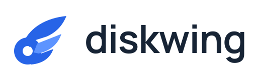
O núcleo circular representa o armazenamento; três penas apontam para cima e para fora. O centro vazado mantém a referência a disco e dá respiro ao símbolo.
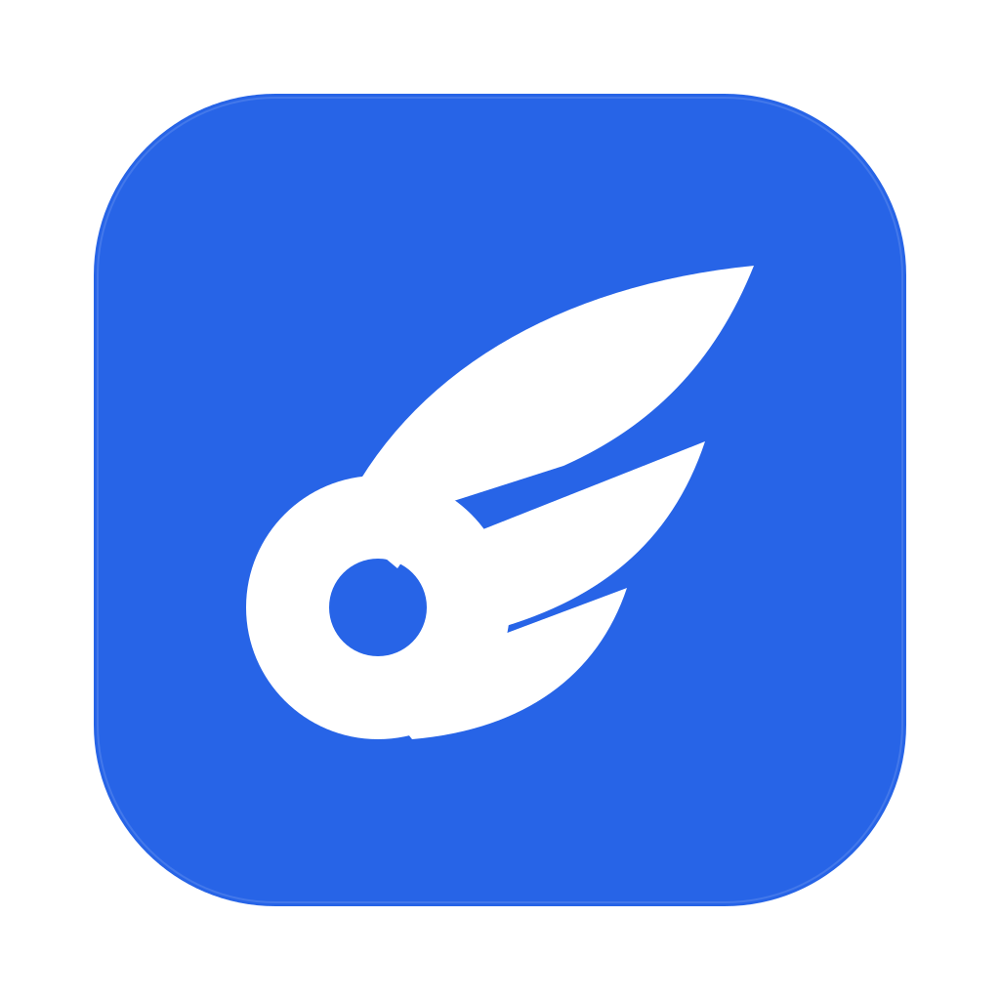
Modelos vetoriais para o aplicativo open source de armazenamento no macOS.

O núcleo circular representa o armazenamento; três penas apontam para cima e para fora. O centro vazado mantém a referência a disco e dá respiro ao símbolo.


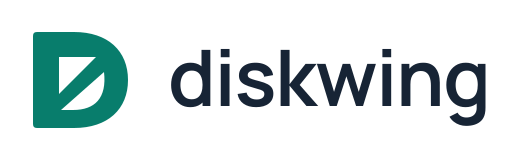
Uma construção compacta em uma única forma. A letra D se reconhece pela haste e pela curva externa; os vazios diagonais sugerem penas e movimento. É o conceito mais contido.
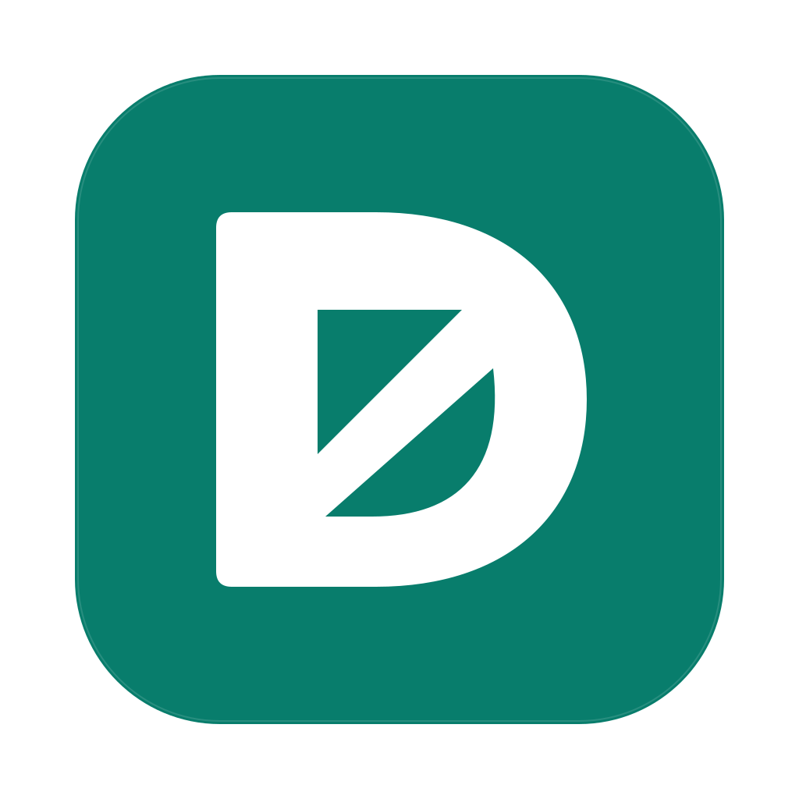
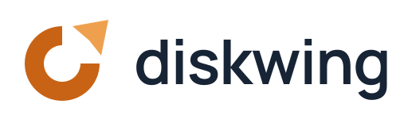
O anel sugere a ocupação do disco. Um segmento se desprende e ganha uma ponta de asa: uma metáfora para espaço recuperado. O círculo permanece forte nas versões pequenas.
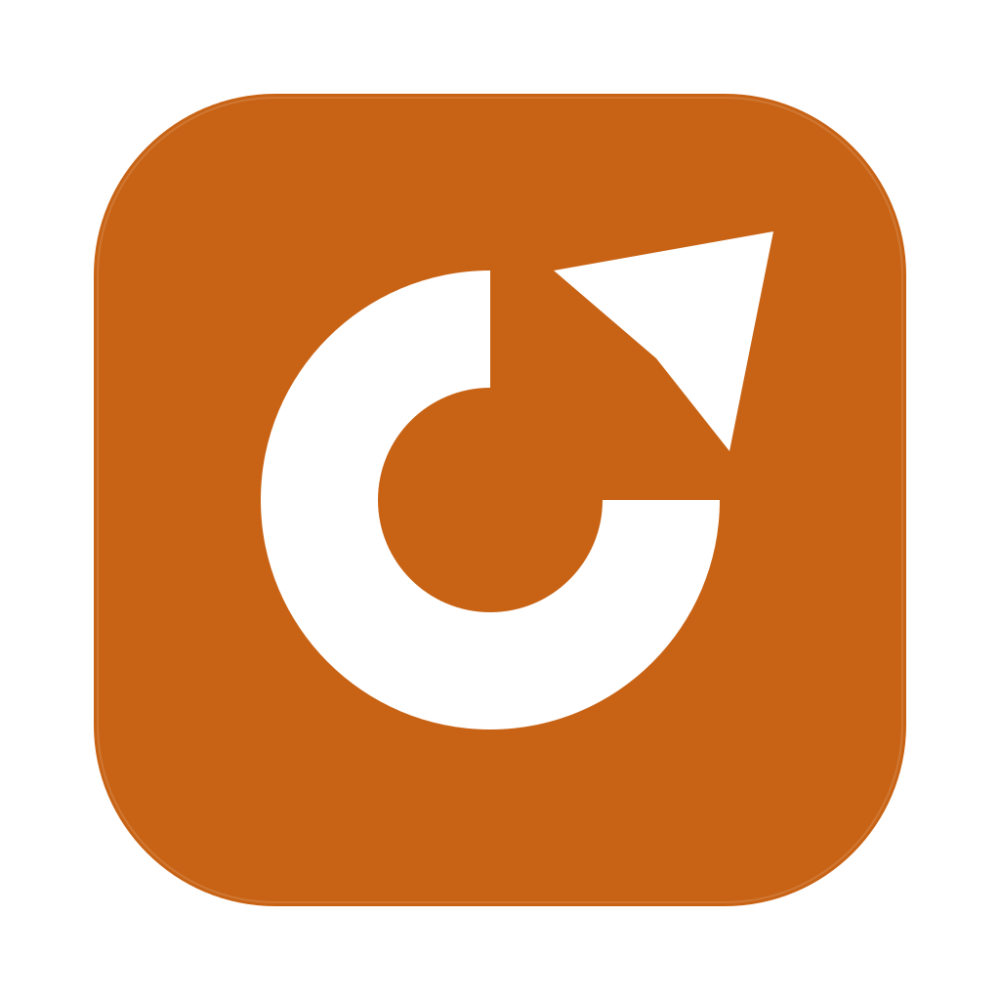
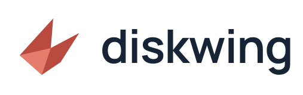
Uma direção abstrata, sem desenhar um dispositivo. O plano maior sugere uma asa aberta; a dobra e a cauda dão uma assinatura própria à silhueta. O nome completa a referência a armazenamento.
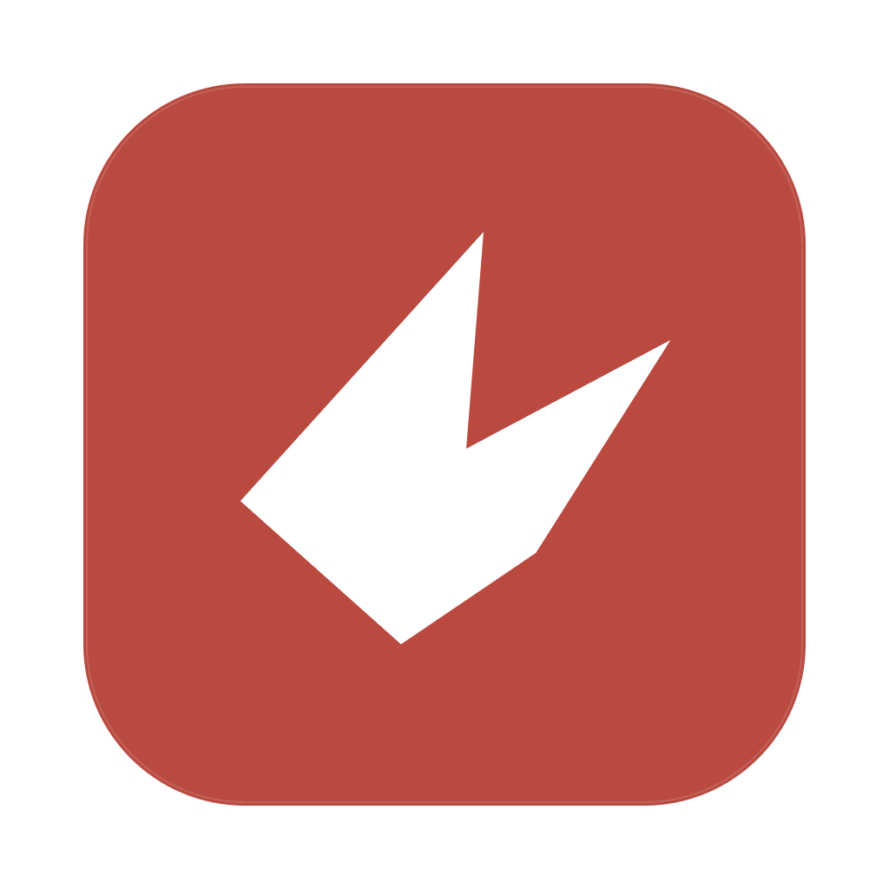
Tipografia Manrope · SVGs com texto em caminhos · diskwing.tech